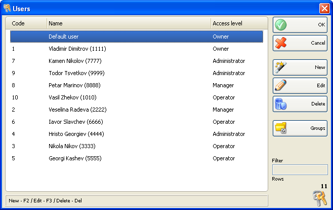

Utilizatori
Fereastra� Utilizatori este folosita pentru selectarea unui utilizator, adaugarea unui utilizator nou si editarea listei de utilizatori. Pentru a selecta un utilizator,din lista, click pe linia corespunzatoare din lista (table). Click pe butonul OK pentru confirmare. Click Cancel pentru iesire din fereastra fara a efectua selectarea.

Se pot folosi butoanele New, Edit, Delete pentru a aduaga un utilizator nou si a edita sau sterge un utilizator existent. Pentru a edita sau sterge un utilizator trebuie selectat utilizatorul respective dupa care trebuie confirmata actiunea dorita.
�2006-2012 Microinvest, All rights reserved